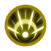
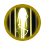

Skell Builds
Earning your ドール license after Chapter 6 changes the scale of the entire adventure, turning sheer cliffs into shortcuts and giving your squad heavy artillery for Chapters 7 through 11. Because frames and cockpit weapons cost substantial Credits, following the level milestones and endgame blueprints below ensures every purchase feels like a major leap forward.
Lv. 20 to Lv. 50 Progression0/0 (0%)
Store-bought frames unlock in distinct level tiers at the Armory Alley terminal. Lean on the two free quest-reward Level 20 frames until your squad hits Level 30, then pick up Heavy or Medium frames paired with high-scaling shoulder weapons like G-Buster and Phoenix to breeze through the second half of the story.
-
 アーバン · Light (Lv. 20, 3 Insurance) · Awarded free upon completing The Skell ドールライセンス.. Low HP and weak default weapons. Save credits for Lv. 30 frames and switch immediately to the free Lv. 20 GD0920 Hraesvelg ST.
アーバン · Light (Lv. 20, 3 Insurance) · Awarded free upon completing The Skell ドールライセンス.. Low HP and weak default weapons. Save credits for Lv. 30 frames and switch immediately to the free Lv. 20 GD0920 Hraesvelg ST. - フレスヴェルグ · Light (Lv. 20, 3 Insurance, DE Exclusive) · Awarded free upon completing Liesel's recruitment Affinity Mission New Skell on the 新たなるドール at Lv. 24+ right after getting the Skell License.. Vastly outperforms US0220 Urban ST for Chapters 6 to 8 exploration and combat at zero credit cost until the party hits Lv. 30.
- ライラ · Medium (Lv. 30, 3 Insurance, NAGI Overdrive) · 301,000 Credits. Best general-purpose Lv. 30 Skell for both Cross and AI companions due to 6,000+ fuel pool and NAGI Overdrive (50% damage reduction, timed HP regen, debuff immunity).
- ウェルス · Light (Lv. 30, 3 Insurance, HAGANE Overdrive) · 268,000 Credits. High evasion and Melee Attack scaling for G-Buster burst.
- アムドゥシアス · Heavy (Lv. 30, 3 Insurance, KURENAI Overdrive) · 548,000 Credits. Highest Lv. 30 Melee Attack, Thermal armor traits, and 10,000+ fuel tank, premier heavy G-Buster + Phoenix carrier.
Mid-Game Weapons
- MDS-FX130SA G-Buster (or MDS-XFX130SA / MDS-XXFX130SA G-Buster) fires バスタークラッシュ on Right Shoulder. 200-Fuel Gravity greatsword strike dealing massive single-target burst and guaranteed Stagger.
- MDB-S430GG Phoenix (or MDB-XS430GG / MDB-XXS430GG Phoenix) fires フェニックスウィング on Back (occupies both Back slots). 200-Fuel wide-radius Thermal PBAoE wave that wipes entire enemy squads in one button press. Farm higher-rarity 430GG/450GG Phoenix drops from Puges in Sylvalum or Badr Basin.
- アムドゥシアス · Heavy (Lv. 50, 3 Insurance, KURENAI Overdrive) · 2,260,000 Credits. Buy one XS0750 Amdusias ST (or AS0450 Lailah ST / AD0450 Lailah.ST at 1,240,000 Credits), equip Lv. 50 SSM-MX150SA G-Buster (MDS-FX150SA G-Buster) + farmed SRM-R450GG / SRM-XXR450GG Phoenix (MDB-S450GG / MDB-XXS450GG Phoenix) + 3x AttributeDmg.THERM / Slayer.INSECTOID augments. Use this single Skell to clear Chapter 12 AND one-shot Joker at Divine Roost to hit Lv. 60. Bonus: XS0750 Amdusias ST's Thermal/Physical armor pieces transfer directly onto Lv. 60 Lailah Queen or Mastema frames later.
01 // アレス900/0 (0%)
Crafting your first post-story super-frame is the fastest shortcut into endgame farming because its built-in Agni Gatling and Aghasura Cannon delete most Level 60 to 80 Tyrants right out of the hangar. Follow the material checklist on the left to gather its Miranium and ticket parts, then slot the accuracy and attack augments on the right when hunting superbosses.
Medium (Lv. 60, 10 Insurance, LEGION Overdrive). Turn-1 Instant Boss & Tyrant Farmer (Aghasura Cannon One-Shot).
- Unlock frame via Automatically unlocked as FILE-SK-ARES90 upon completing 第12章 魂の所在..
- Store 100,000
 ミラニウム.
ミラニウム. -
 暗黒辰砂 x2 · Noctilum FrontierNav Mining Probes (FN 202, 207, 215, 218, 220). Obtained exclusively through FrontierNav Mining Probes.
暗黒辰砂 x2 · Noctilum FrontierNav Mining Probes (FN 202, 207, 215, 218, 220). Obtained exclusively through FrontierNav Mining Probes. -
 イェギラスの黄金心臓 x2 · Yggralith Zero spoils or Material Tickets (3,180 tickets for 2 in DE)
イェギラスの黄金心臓 x2 · Yggralith Zero spoils or Material Tickets (3,180 tickets for 2 in DE) - ウィータの銀心臓 x4 · Time Attack Twin Dolls / Vita or Material Tickets
- ニールネールの生仮面 x12 · Time Attack Twin Dolls of Mystery or Material Tickets
- バスギアの制御装置 x8 · High-level Seidrs in Cauldros/Sylvalum or Material Tickets
- 次世代メインコア部品 x12 · Xe-doms or Material Tickets
- 改良レンズ部品 x16 · oc-serv / Seidrs or Material Tickets
Loadout & Setup
- aghasura_weapon_slots_3
- other_weapon_slots_9
- frame_slots_3
- armor_slots_5
- ARES-SP0290 AGASURA fires アガースラカノン (Ether (1,500 Fuel, 3-hit nuke)).
- ARES-SP0190 VAJRA fires ヴァジュラフレイル (Physical).
- ARES-SP0290 AGNI fires

アグニガトリング (Thermal). - ARES-SP0290 AVATAR fires アヴァターラミサイル (Thermal).
02 // ライラ・クィーン0/0 (0%)
When a prolonged superboss fight calls for near-immortality rather than a single opening volley, this Medium frame's Nagi Overdrive grants status immunity, massive damage reduction, and continuous HP regeneration. Use the recipe and Diskbomb or Drone setup below to build an effortless sustained brawler.
Medium (Lv. 60, 3 Insurance, NAGI Overdrive). Immortal Sustained-Overdrive Superboss Killer (Thermal Diskbomb + Megaflame OR Beam Drone).
- Unlock frame via Unlocked as FILE-SK-LAILAH80 after completing 第12章 魂の所在..
- Store 10,000 ミラニウム.
- ウロボロス結晶 x2 · Oblivia FrontierNav (FN 308, 309, 320)
- トゥルドゥールの吸盤 x6 · Enemy drop or Material Tickets
- ニールネールの生仮面 x4 · Enemy drop or Material Tickets
- ゼ＝ラアの白銀紋章 x12 · Enemy drop or Material Tickets
- 古代防衛機構の装甲 x2 · Enemy drop or Material Tickets
- 次世代クランク部品 x8 · Enemy drop or Material Tickets
- ゼ＝ラア・ハンド x10 · Enemy drop or Material Tickets
Loadout & Setup
- NAGI Overdrive. NAGI Overdrive provides 0.5x incoming damage multiplier (50% damage reduction), continuous HP regeneration, appendage HP regeneration, and total debuff immunity. Triggering Cockpit Time before Overdrive expires extends NAGI Overdrive automatically at zero GP cost.
- Thermal Diskbomb (Sidearms). 2x SHM-XXR260GG Diskbomb (MDW-XXS260GG Diskbom) or SHM-XXR250GG Diskbomb (MDW-XXS250GG Diskbom, farmed from Lv. 51+ Milsaadi at Mt. M'gando in Cauldros). In XCX:DE, BOTH Diskbombs must carry Custom.WP-MSL-MAG (Custom.WP-MAG-M) upgraded to IX/X and be alternated, since the Wii U off-hand transfer glitch was patched.
- Thermal Diskbomb (Shoulders). メガフレイムバレット + SSM-XXR160SA M-Missile (MDS-XXS160SA M-Missile, Thermal)
- Thermal Diskbomb (Back And Arms). SRM-XXR460GG Phoenix (MDB-XXS460GG Phoenix) or Thermal shields/crackers with AttributeDmg.THERM (ElementDmg.HEAT) + SpecUp.R-ATK (SpecUp.S-POW) battle traits.
- Thermal Diskbomb (Armor Swap). Transfer armor pieces from XS0750 Amdusias ST (XD0750 Amdusias.ST) or Amdusias Hades (Amdusias.HADES) for innate AttributeDmg.THERM (ElementDmg.HEAT).
- Thermal Diskbomb (Frame Augments). 3x AttributeDmg.THERM XX (ElementDmg.HEAT XX)
- Thermal Diskbomb (Weapon Augments). 3x Custom.WP-ATK XX (Custom.WP-POW XX) on Megaflame-B, 5x Crush.APPEND XX (Crash.PARTS XX), Slayer.ULTRAFAUNA XX (KillerDmg.ULTIMATE XX), 1x Reflect.NEG-THERM XX (Reflection.N-HEAT XX)
- Beam Drone (Weapons). ディスクフラップ or フラップシュート + Beam Sidearms/Shields.
- Beam Drone (Frame Augments). 3x AttributeDmg.BEAM XX (ElementDmg.BEAM XX)
03 // マステマ・ホワイトリーパー0/0 (0%)
Players who enjoy engineering single-hit knockouts or automated part-breaking farmers gravitate toward this Heavy frame for its towering Ranged Attack stat. Pick either the Zenith Cannon one-shot configuration to bypass enemy resistances or the M-Missile setup to strip every appendage off material targets.
Heavy (Lv. 60, 3 Insurance, GEHENNA Overdrive). Dual Meta Platform: Zenith-Cannon Physical One-Shot OR SA/ME M-Missile Appendage Auto-Farmer.
- Unlock frame via Unlocked as FILE-SK-MASTEMA80 after completing 第12章 魂の所在..
- Store 10,000 ミラニウム.
- ウロボロス結晶 x2 · FrontierNav Mining Probes
- トゥルドゥールの吸盤 x4 · Enemy drop or Material Tickets
- ニールネールの生仮面 x2 · Enemy drop or Material Tickets
- ゼ＝ラアの漆黒紋章 x6 · Enemy drop or Material Tickets
- 古代防衛機構の装甲 x10 · Enemy drop or Material Tickets
- 次世代クランク部品 x12 · Enemy drop or Material Tickets
- ゼ＝ラア・ハンド x12 · Enemy drop or Material Tickets
Loadout & Setup
- MDB-USP280SA Hyper-Railgun /

超々電磁砲. Mastema White Reaper has the highest base Ranged Attack of all Skells, and EM Zenith Cannon deals a single massive Physical hit that bypasses 100% of enemy attribute resistances (even 90-100 Physical Res enemies take full unmitigated damage). Equip Amdusias Hades (Amdusias.HADES) armor pieces onto Mastema White Reaper for innate AttributeDmg.PHYS (ElementDmg.PHYSICS). 3x AttributeDmg.PHYS XX (ElementDmg.PHYSICS XX) on Frame, 3x Custom.WP-ATK XX (Custom.WP-POW XX) directly on SRM-USP280SA Zenith-Cannon, remaining weapon slots filled with Draw.OPENING-DMG XX (Start.ARTS-ATTACK XX), Slayer.ULTRAFAUNA XX (KillerDmg.ULTIMATE XX), PositionDmg.ABOVE XX (PosDmg.HIGH XX), 1x Reflect.NEG-PHYS XX (Reflection.N-PHYSICS XX), and up to 5x Crush.APPEND XX (Crash.PARTS XX). - M-Missile Farmer (Sakuraba Thermal Models). {'en': 'SSM-R160SA M-Missile / SSM-XR160SA M-Missile / SSM-XXR160SA M-Missile (also 140SA / 150SA)', 'jp': 'MDS-S160SA M-Missile / MDS-XS160SA M-Missile / MDS-XXS160SA M-Missile (also 140SA / 150SA)', 'source': 'Dropped by Judge Pugiliths (e.g., Ganglion Antropolis in Cauldros / Badr Basin).'}
- M-Missile Farmer (Meredith Beam Models). {'en': 'SSM-R160ME M-Missile / SSM-XR160ME M-Missile / SSM-XXR160ME M-Missile (also 140ME / 150ME)', 'jp': 'MDS-S160ME M-Missile / MDS-XS160ME M-Missile / MDS-XXS160ME M-Missile (also 140ME / 150ME)', 'source': 'Dropped by high-level Puges (e.g., Sylvalum Ciel Sandsea / Cauldros).'}
- M-Missile Farmer (Mandatory Trait). {'en': 'Custom.WP-MSL-MAG', 'jp': 'Custom.WP-MAG-M', 'upgrade_note': 'Upgrade Custom.WP-MSL-MAG (Custom.WP-MAG-M) to MAX (IX or X) at the AM Terminal to multiply missiles per salvo.'}
- M-Missile Farmer (Why Only Sa And Me). Only Sakuraba (SA, Thermal) and Meredith (ME, Beam) M-Missiles possess independent multi-appendage targeting, automatically locking onto and destroying EVERY breakable appendage on an enemy simultaneously (including high appendages out of normal reach). Sakuraba (SA) and Meredith (ME) M-Missiles auto-target all intact appendages.
- M-Missile Farmer (Augments). 5x Crush.APPEND XX (Crash.PARTS XX), 3x Custom.WP-SPEED XX on each M-Missile for rapid recast, 3x AttributeDmg.THERM XX (ElementDmg.HEAT XX, for SA) or AttributeDmg.BEAM XX (ElementDmg.BEAM XX, for ME) on Frame, and Treasure Sensor XX on pilot inner armor.
04 // フレスヴェルグ・ロード0/0 (0%)
Built for pure aerial speed and cruise-mode agility, this jet-transforming Light frame makes sweeping sightseeing spots, aerial FrontierNav beams, and high-altitude map sectors a breeze. Assemble its schematic after finishing Liesel's storyline whenever you want the most responsive explorer in the hangar.
Light (Lv. 60, 3 Insurance, HAGANE Overdrive, DE Exclusive). Fastest Overworld Exploration Skell (Jet Cruise Mode) & High-Evasion Stagger/Topple Support.
- Unlock frame via Unlocked as FILE-SK-HRAESVELG upon completing Liesel's Affinity Mission 正しさの在り処, which also unlocks jet Cruise Mode transformation for all Hraesvelg frames..
- Store 30,000 ミラニウム.
- ウロボロス結晶 x2 · FrontierNav Mining Probes
- ヴァサラの武神勲章 x1 · Enemy drop or Material Tickets
- 黄金色の装甲 x2 · Enemy drop or Material Tickets
- ゼ＝ラアの漆黒紋章 x5 · Enemy drop or Material Tickets
- 古代防衛機構の装甲 x6 · Enemy drop or Material Tickets
- 次世代チャンバー部品 x3 · Enemy drop or Material Tickets
- ティダーラの殺生石 x4 · Enemy drop or Material Tickets
Loadout & Setup
- Uses fixed integrated weapons (SAM-M160GG Build / MDA-F160GG Build, SRM-M360GG G-Slash / MDB-F360GG G-Slash, SSM-R660GG H-Nova / MDS-S660GG S-Nova, SSM-R760GG Boost / MDS-S760GG Boost, etc.). Raw damage is markedly lower than Ares 90, Lailah Queen, or Mastema White Reaper, so it is best augmented with SpecUp.EVA XX (SpecUp.Eva XX) + Arts.GP XX as Cross's ultra-fast Cruise Mode map-completion vehicle or handed (with >= 1 insurance) to an AI companion as an untouchable evasion/Topple support Skell.
05 // Chapter 13 Skell · アレス・オリジナル0/0 (0%)
Unlocked during the Chapter 13 epilogue campaign, this story frame arrives ready for action with fixed multi-hit weapons that carry you directly through late-story encounters right out of the hangar.
Special / Medium-equivalent (Lv. 50, 10 Insurance, LEGION Overdrive, DE Exclusive). Zero-Cost Chapter 13 Story Skell.
- Unlock frame via Automatically acquired free upon completing 第13章 前編 因果 alongside Al. Locked to Al until 第13章 後編 英雄 is completed, after which any Lv. 50+ pilot can board it..
Loadout & Setup
- Comes with 10 fixed integrated weapons (ARES-DW0000 M-BLADE, ARES-DW0000 M-BLASTER, ARES-SP0000 CHAOS, CHARGE, DAEDALION / DAITARION, HECATON, HERMES, HYPER, RUSH, SHIELD). Because it is a Lv. 50 frame with fixed weapons, it serves as a strong zero-investment Chapter 13 story mech (socket spare Opening-DMG / Slayer / AttributeDmg augments), then gets retired for post-game Ultrafauna hunting in favor of Ares 90 or custom Lv. 60 frames.